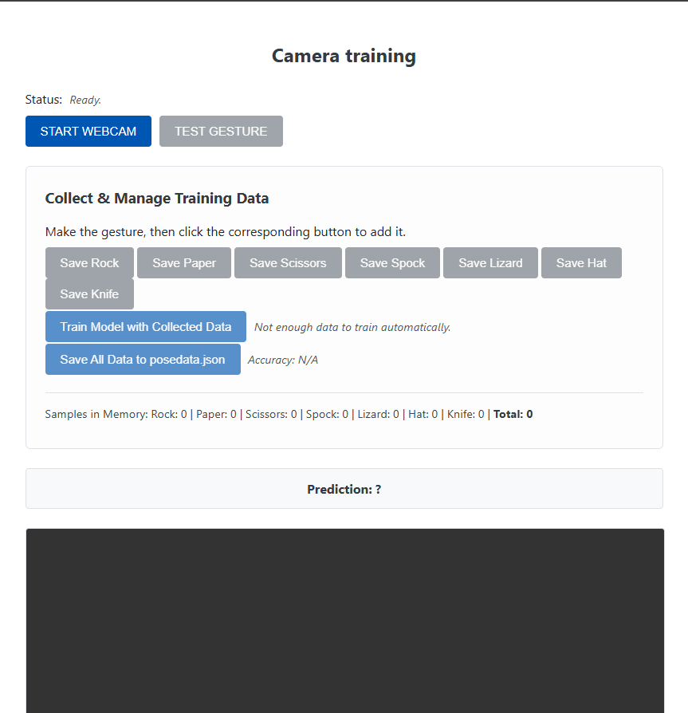
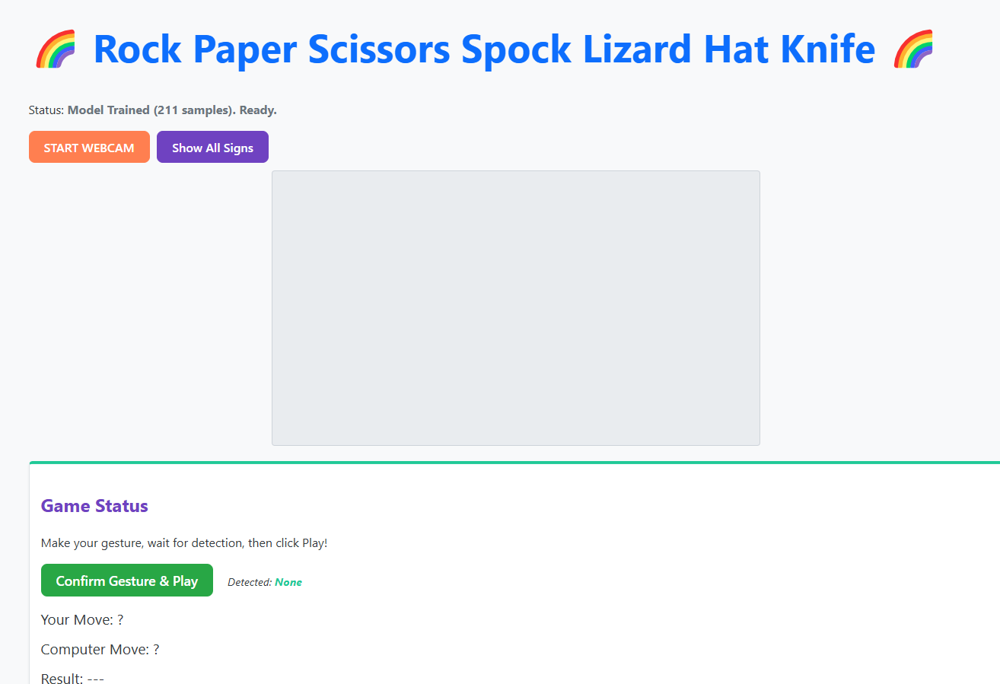

Project: Webcam Hand Gesture Recognition
Project Overzicht
Dit project verkent het gebruik van webcam-gebaseerde handgebarenherkenning voor interactieve webapplicaties. Het is opgesplitst in twee delen: een trainingstool om een k-Nearest Neighbors (k-NN) model te bouwen op basis van MediaPipe hand landmarks, en een spel dat dit getrainde model gebruikt om "Rock Paper Scissors Spock Lizard Hat Knife" te spelen via de webcam.
Deel 1: Training Applicatie
Deze applicatie stelt gebruikers in staat om een dataset van handgebaren te creëren en een k-NN model te trainen. Via de webcam detecteert MediaPipe HandLandmarker de handposities. De gebruiker kan specifieke gebaren (Rock, Paper, etc.) maken en deze labelen door op de bijbehorende knop te klikken. De verzamelde data (genormaliseerde landmark-coördinaten en labels) kan vervolgens worden gebruikt om het k-NN model te trainen en de nauwkeurigheid ervan te testen. De volledige dataset kan worden opgeslagen als een JSON-bestand (`posedata.json`).
Kernfunctionaliteiten & Technologieën:
- Real-time hand tracking met MediaPipe HandLandmarker.
- Verzamelen en labelen van hand landmark data.
- Implementatie en training van een k-Nearest Neighbors (k-NN) model in JavaScript.
- Data opsplitsen in training- en testsets voor nauwkeurigheidsberekening.
- Exporteren van de verzamelde data naar een JSON-bestand.
- HTML, CSS, JavaScript.

Deel 2: RPSLSHK Spel Applicatie
Deze applicatie laadt het `posedata.json`-bestand dat door de trainingstool is gegenereerd en gebruikt het getrainde k-NN model om het spel "Rock Paper Scissors Spock Lizard Hat Knife" (RPSLSHK) te spelen. De speler maakt een handgebaar voor de webcam, dat in real-time wordt geclassificeerd door het model. Wanneer de speler zijn zet bevestigt, genereert de computer een willekeurig gebaar en wordt de winnaar bepaald volgens de spelregels.
Kernfunctionaliteiten & Technologieën:
- Laden van de getrainde dataset (`posedata.json`).
- Initialiseren van het k-NN model met de geladen data.
- Real-time classificatie van het handgebaar van de speler via de webcam.
- Implementatie van de RPSLSHK spelregels en logica.
- Willekeurige zetgeneratie voor de computer tegenstander.
- Weergeven van spelerzet, computerzet en resultaat.
- MediaPipe HandLandmarker, k-NN (classificatie), JavaScript, HTML, CSS.
Leerresultaten
Dit tweedelige project bood waardevolle ervaring in het end-to-end proces van het bouwen van een machine learning-gestuurde applicatie voor het web. Belangrijke leerpunten waren de integratie van MediaPipe voor real-time computer vision, het praktische gebruik van het k-NN algoritme voor classificatie, het beheren en structureren van trainingsdata (inclusief export/import via JSON), en het verbinden van een dataverzamelings-/trainingsfase met een toepassingsfase (het spel). Het benadrukte ook het belang van voldoende en kwalitatieve trainingsdata voor de prestaties van het model.